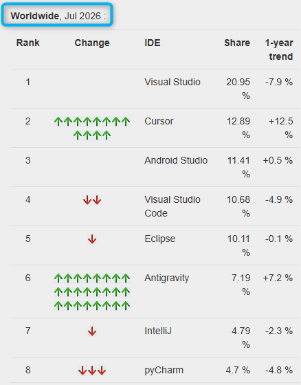
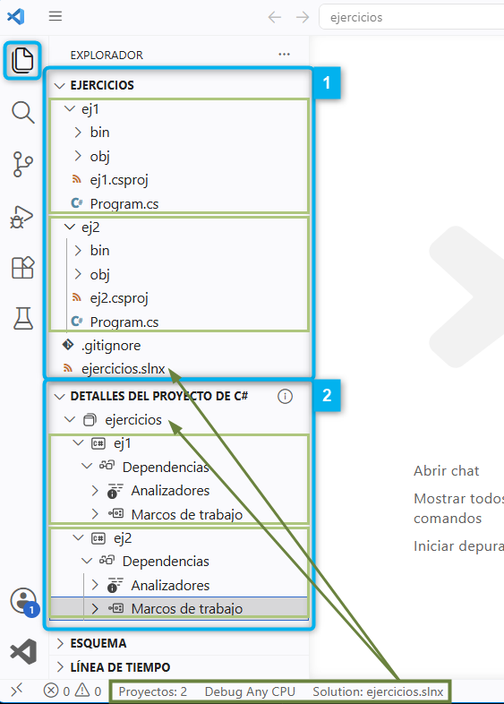
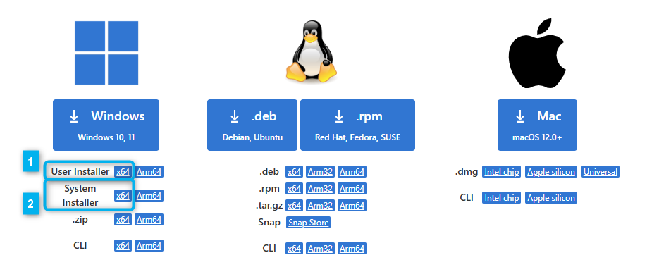
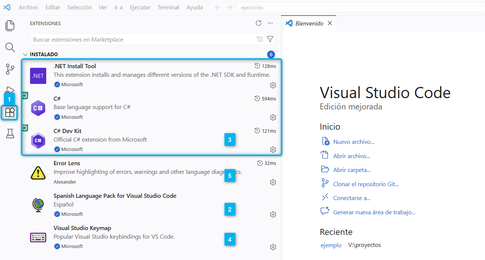
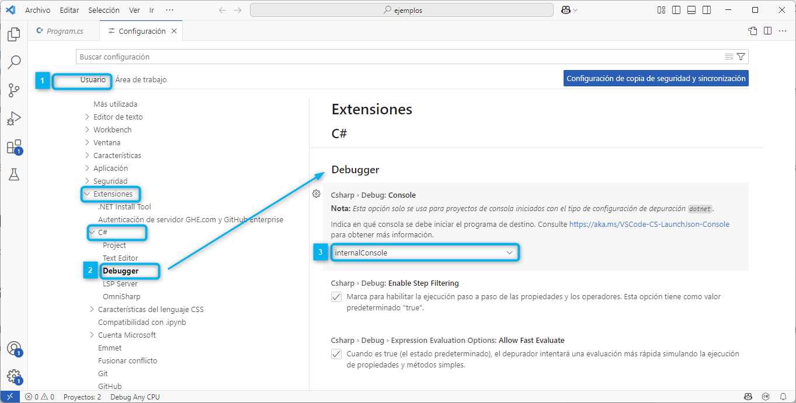

Descargar estos apunte en pdf o html
En este enlace a una carpeta de OneDrive puedes encontrar el archivo PortablePRG.zip con la instalación portable de .NET SDK 10 y VSCode que vamos a utilizar durante todo el curso 2026/27 incluidas las pruebas prácticas.
Para poder acceder al enlace de la carpeta debes estar autenticado con tu cuenta de alu.edu.gva.es. Si no lo estás, te pedirá que te autentiques. Si aún no tienes acceso a tu cuenta, puedes seguir los pasos descritos en la en siguiente punto de ampliación.
En el siguiente enlace puedes encontrar una guía con los pasos que se han seguido para generar esta configuración portable donde si tienes tiempo puedes profundizar en los elementos que la componen y cómo se ha generado.
Aviso
No se recomienda descomprimir el contenido de la carpeta en un dispositivo de almacenamiento externo (pendrive, disco duro externo, etc.) ya que el rendimiento de la ejecución de los programas se vería bastante afectado.
Además, esta instalación portable no se actualizará automáticamente, para evitar problemas de compatibilidad con ejercicios y recursos durante el curso e instalaciones inesperadas después de un largo tiempo sin usarse.
Imaginemos que estamos logueados con el usuario alumno y que hemos descargado el archivo PortablePRG.zip en la carpeta C:\Users\alumno\Documents. Tras descomprimir el zip directamente, tendremos un árbol de carpetas como el del esquema de la derecha.
Debería ya estar todo preparado para que podamos empezar a trabajar con VSCode y .NET SDK 10 ejecutando el script inicio.cmd nos establecerá el entrono de ejecución portable.
Al ejecutar el script inicio.cmd se creará una unidad virtual V: que equivaldrá a la ruta donde hayamos ubicado la instalación portable. En nuestro caso C:\Users\alumno\Documents\PortablePRG como se muestra en el esquema de carpetas de la derecha. De esta forma, podremos trabajar con rutas fijas y no depender de la ruta donde hayamos descomprimido el zip.
Esta unidad virtual (V:\) nos permitirá tener una ruta fija con la que se realizó la instalación y por tanto permitirá que las extensiones de VSCode que almacenan rutas absolutas funcionen correctamente. Además, se establecerán las variables de entorno necesarias para que el SDK de .NET funcione correctamente.
Por último, el script cli.cmd nos abrirá un terminal de comandos (cmd) situado en la carpeta V:\proyectos con todas las variables de entorno necesarias para poder trabajar con .NET SDK 10 a través de la CLI dotnet.
Aunque quizá no entiendas algún concepto en este momento, si tienes interés en saber más sobre la instalación portable, puedes leer el siguiente descripción a continuación ...
Configuración de usuario del SDK de .NET:
V:\dotnet_localconfig es la carpeta que hemos elegido para guardar la configuración del SDK de .NET. En ella, además de los datos de configuración del SDK de .NET, se guardará la caché de paquetes y herramientas de NuGet. Ya entenderás a qué nos referimos con esto último durante el curso.
Si hubiéramos instalado el SDK de .NET de forma 'normal', esto es, a través del instalador. La configuración del mismo se guardaría en la carpeta C:\Users\alumno\.dotnet para nuestro usuario alumno.
Ubicación del .NET y el SDK:
Dentro de la carpeta V:\dotnet se encuentra el .NET SDK y el Runtime. En el hay muchas carpetas y ficheros, pero la más importante es la carpeta sdk donde se encuentran las diferentes versiones del SDK de .NET que tengamos instaladas. En nuestro caso, solo tenemos la versión 10.0.302 que es la que vamos a utilizar durante el curso.
Proyectos de C#:
Dentro de la carpeta V:\proyectos es donde guardaremos todos los proyectos que vayamos creando durante el curso. De entrada puedes encontrar dos carpetas ejemplo y ejemplo_con_test que son dos proyectos de ejemplo con el típico "Hello World" y con los cuales podremos probar que la instalación funciona correctamente. Como su nombre indica, el segundo proyecto tiene además un proyecto de test asociado, para permitirnos probar la ejecución de test unitarios con xUnit.
VSCode portable:
Dentro de la carpeta V:\vscode se encuentra la instalación portable de VSCode con las que nos permitirán trabajar con C# y .NET ya instaladas.
Se trata de editores 'ligeros' que nos permiten trabajar con diferentes lenguajes de programación y tecnologías. Suelen ser multiplataforma, incluso On-Line a través del navegador.
El más popular y que prácticamente tiene una posición dominante en la actualidad es Visual Studio Code (VSCode) (Microsoft). Es un editor Open Source bastante ligero con infinidad de extensiones creadas por la 'comunidad'.
Aunque su uso más popular es para el desarrollo Web. También nos permitirá afrontar una gran cantidad de desarrollos en lenguajes y tecnologías diferentes como C#.
Además, muchos de los entornos más 'populares' no CLI basados en IA como Cursor (SpaceX), Antigravity (Google), etc. están basados en VSCode y sus extensiones. Por lo que es interesante conocerlo y dominarlo.
El IDE oficial 'gratuito' sería Visual Studio (Community). Este, aunque gratuito, es muy potente y sería la opción adecuada si nos especializamos únicamente en desarrollos con .NET.
Tiene varios inconvenientes:
Otro IDE menos popular para C# y .NET es Rider. Desarrollado por JetBrains, se trata de un IDE multiplataforma y con versión portable. Aunque deberemos instalar el .NET SDK por separado.
Puedes ser interesante si ya estás familiarizado con otros IDEs populares IDE de JetBrains como IntelliJ (Java/Kotlin/Spring/JakartaEE, etc.), PyCharm (Python), Android Studio (Android), etc. ya que todos ellos comparten la misma interfaz y filosofía de uso.

Arriba tienes un ranking obtenido de PYPL que es un índice de popularidad obtenido a partir de las tendencias de búsqueda en Google de los diferentes IDEs y editores de desarrollo.
La gestión de proyectos se hace con la CLI dotnet. Pero para poder usar el .NET instalado en nuestra versión portable, tendremos dos opciones:
cli.cmd que nos abrirá un terminal de comandos (cmd) situado en la carpeta V:\proyectos y que contendrá todas las variables de entorno necesarias para poder trabajar con nuestro .NET SDK 10 portable.inicio.cmd que nos abrirá uns instancia de VSCode con la configuración portable y que a través de la opción de menú Terminal → Nuevo Terminal o (Ctrl + Shift + ñ) nos abrirá un terminal de comandos (cmd) situado en la parte inferior de VSCode. Deberíamos manualmente situarnos en la carpeta V:\proyectos con el comando cd /d V:\proyectos.Por ejemplo, para crear un proyecto desde consola usaremos dotnet new y en concreto para crea una aplicación de consola ejecutaremos dotnet new console -n <nombre> siguiendo los siguiente pasos:
Creamos una carpeta a modo de workspace donde guardaremos los proyectos de ejemplo de la unidad. Por ejemplo, V:\proyectos\u2ejemplos y nos situamos en ella ejecutando los siguientes comandos:
V:\proyectos> mkdir u2ejemplos V:\proyectos> cd u2ejemplos
Creamos un proyecto de consola con el nombre ejemplo1 ejecutando el siguiente comando:
V:\proyectos\u2ejemplos> dotnet new console -n ejemplo1 La plantilla "Aplicación de consola" se creó correctamente. Procesando acciones posteriores a la creación... Restaurando V:\proyectos\u2ejemplos\ejemplo1\ejemplo1.csproj: Restauración realizada correctamente.
Tras ejecutar este comando, se creará un proyecto definido en el fichero V:\proyectos\u2ejemplos\ejemplo1\ejemplo1.csproj donde, si no especificamos la versión de .NET, nos lo creará con la que hemos instalado y el lenguaje será C# con la última versión posible de esa plataforma.
Como podemos ver, para nuestro ejemplo la plataforma de destino es .NET 10 y la versión de C# es la 14 (aunque no lo indica porque es la de defecto para .NET 10)
<Project Sdk="Microsoft.NET.Sdk"> <PropertyGroup> <OutputType>Exe</OutputType> <TargetFramework>net10.0</TargetFramework> <ImplicitUsings>enable</ImplicitUsings> <Nullable>enable</Nullable> </PropertyGroup> </Project>
Nota
Para más información ver la documentación oficial.
Es un punto que ha cambiado bastante en .NET 10 respecto a versiones anteriores, en .NET 10 podremos:
Podemos decir que una solución es un contenedor o unidad organizativa que nos permite agrupar uno o varios proyectos. Aunque no es obligatorio, es recomendable crear una solución para cada proyecto que creemos.
Importante
En versiones anteriores a .NET 10, la extensión de los ficheros de solución era .sln y contenía información para Visual Studio. En .NET 10, la extensión de los ficheros de solución es .slnx y su contenido se ha simplificado bastante. Es posible migrar una solución de versiones anteriores a .NET 10 usando el comando dotnet sln migrate ejemplo.sln cambiará la extensión de la solución a ejemplo.slnx actualizando su estructura. Para más información mira la documentación oficial.
Por ejemplo, para crear una solución para nuestro proyecto de ejemplo y asociarle el proyecto ya creado, ejecutaremos los siguientes comandos:
Creamos la solución ejemplo1.slnx ejecutando el siguiente comando:
V:\proyectos\u2ejemplos> dotnet new sln -n ejemplo1 La plantilla "Archivo de la solución" se creó correctamente.
Asociamos el proyecto ejemplo1.csproj a la solución ejemplo1.slnx ejecutando el siguiente comando:
V:\proyectos\u2ejemplos> dotnet sln ejemplo1.slnx add ejemplo1\ejemplo1.csproj Se ha agregado el proyecto "ejemplo1\ejemplo1.csproj" a la solución.slnx'.
Fíjate que hemos tenido que indicar la ruta relativa del proyecto ejemplo1\ejemplo1.csproj ya que el comando dotnet sln add se ejecuta desde la carpeta donde se encuentra la solución y no desde la carpeta del proyecto.
Si examinamos el contenido del fichero ejemplo1.slnx veremos que contiene la información de la solución y del proyecto asociado en formato XML como se muestra en el esquema de la derecha.
<Solution>
<Project Path="ejemplo1/ejemplo1.csproj" />
</Solution>
Tendremos dos opciones:
Compilamos todos los proyectos dentro de la solución. Como en nuestro caso solo hay un proyecto, se compilará únicamente ese. Ejecutaremos el siguiente comando:
V:\proyectos\u2ejemplos> dotnet build ejemplo1.slnx
Si hay una única solución en la carpeta, podemos omitir el nombre de la solución y ejecutar el siguiente comando:
V:\proyectos\u2ejemplos> dotnet build
Compilamos un proyecto concreto. Ejecutaremos el siguiente comando:
V:\proyectos\u2ejemplos> dotnet build ejemplo1\ejemplo1.csproj
En ambos casos antes de la compilación se ha ejecutado automáticamente un proceso de restauración de paquetes y herramientas que podríamos haber ejecutado manualmente con el comando dotnet restore ejemplo1\ejemplo1.csproj. Esto condición necesaria para que el proyecto pueda compilar correctamente.
No podremos ejecutar directamente una solución pues puede estar compuesta por más de una proyecto ejecutable y no sabría cuál ejecutar. Por lo que deberemos ejecutar un proyecto concreto. Tendremos también varias opciones:
[Recomendada] Situándonos en la carpeta del proyecto, podemos ejecutar el siguiente comando:
V:\proyectos\u2ejemplos> cd ejemplo1 V:\proyectos\u2ejemplos\ejemplo1> dotnet run
No hay confusión posible ya que solo hay un proyecto en la carpeta. Pero si hubiera más de un proyecto, nos daría un error y nos indicaría que deberíamos indicar el proyecto a ejecutar.
En la carpeta del archivo de la solución, indicamos que proyecto queremos ejecutar dentro de la solución. Ejecutaremos el siguiente comando:
V:\proyectos\u2ejemplos> dotnet run ejemplo1.slnx --project ejemplo1
Como antes, si hay una única solución en la carpeta, podemos omitir el nombre de la solución y ejecutar el siguiente comando:
V:\proyectos\u2ejemplos> dotnet run --project ejemplo1
Tras ejecutar los comandos anteriores, tendremos la estructura de carpetas y ficheros del diagrama donde:
[u2ejemplos] es la carpeta que hemos creado para guardar los proyectos de ejemplo de la unidad.[ejemplo1] es la carpeta del proyecto de ejemplo que hemos creado.ejemplo1.slnx es el fichero de la solución que hemos creado y como ves, debería estar por encima en la jerarquía de carpetas del proyecto o proyectos que contiene. En nuestro caso solo contiene el proyecto ejemplo1.ejemplo1.csproj es el fichero de definición del proyecto que hemos creado y que contiene la información necesaria para compilarlo y ejecutarlo.Program.cs es el fichero de código fuente que contiene la clase Program y el método Main() que es el punto de entrada del programa.[bin] y [obj] son carpetas de salida que se crean automáticamente al compilar el proyecto. En la carpeta [bin] se genera el ejecutable del proyecto y en la carpeta [obj] se generan ficheros intermedios necesarios para la compilación.Lo más simple para abrir una solución con un único proyecto creado desde la consola como hicimos en el ejemplo anterior, sería abrir o arrastrar a VSCode la carpeta donde se encuentra el archivo con la solución. En nuestro caso V:\proyectos\u2ejemplos. Automáticamente nos abrirá el la solución ejemplo1.slnx.
Veamos cómo sería el proceso, paso a paso:
Crearemos una carpeta o workspace con el nombre de la solución y que contendrá todos los proyectos. Por ejemplo, vamos a crear una solución que contenga varios ejercicios y por tanto crearemos la carpeta V:\proyectos\u2ejemplos\ejercicios
Dentro de la carpeta creamos la solución.
V:\...\ejercicios> dotnet new sln -n ejercicios
Creamos por ejemplo dos proyectos de consola pertenecientes al ejercicio 1 y 2 respectivamente.
V:\...\ejercicios> dotnet new console -n ej1 V:\...\ejercicios> dotnet new console -n ej2
Asociamos los proyectos a la solución y como solo hay una en el wrokspace, no es necesario indicar el nombre de la solución.
V:\...\ejercicios> dotnet sln add ej1\ej1.csproj V:\...\ejercicios> dotnet sln add ej2\ej2.csproj
Por último y de forma opcional, podemos crear un fichero .gitignore por si acaso decidiéramos subir la solución a un repositorio de Git en el futuro. Esto nos permitirá ignorar ficheros y carpetas que no queremos subir al repositorio.
V:\...\ejercicios> dotnet new gitignore
Si abrimos la carpeta V:\proyectos\u2ejemplos\ejercicios que contiene la solución desde VSCode. Detectará automáticamente la solución ejercicios.slnx y nos mostrará en el explorador de soluciones los dos proyectos que contiene.
Si pulsamos en el explorador de archivos:
1️⃣ Tendremos arriba la sección desplegable EJERCICIOS, que nos mostrará la jerarquía de carpetas y ficheros con solución y proyectos.
2️⃣ También aparecerá la sección desplegable DETALLES DEL PROYECTO DE C# que nos permitirá ver la jerarquía de proyectos en la solución de forma similar a como lo hace el Visual Studio Comunity. En el momento de hacer esta captura esta vista está en transición y puede que desaparezca en el futuro.
Para saber que el servido de aplicaciones de C# funciona bien. En la barra de estado nos debería el número de proyectos detectados y el nombre del la solución ejercicios.slnx.
Si esto no aparece es que algo ha ido mal cargando el proyecto.

A lo largo del curso se darán diferentes tips de uso del teclado y atajos para refactorizar.
Puesto que hemos instalado "Visual Studio Keymap". Se nos habrán configurados automáticamente las siguientes extensiones de teclado.
Importante
Es importantísimo que empieces a utilizarla ya si quieres coger cierta soltura desarrollando código. Tarde o temprano lo tendrás que hacer.
| Acción | Teclado | Acción | Teclado |
|---|---|---|---|
| Salta letra | →/← |
Salta palabra | Ctrl+→ o Ctrl+← |
| Salta al inicio | Ctrl+Inicio |
Salta al final | Ctrl+Fin |
| Selecciona letra | Shift+→ o Shift+← |
Selecciona palabra | Shift+Ctrl+→ o Shift+Ctrl+← |
| Selecciona línea | Inicio, Shift+↓ |
Selecciona columna | Shift+Alt+↓ y/o Ctrl+Alt+→ |
| Selecciona hasta inicio | Ctrl+Shift+Inicio |
Selecciona todo | Ctrl+A o Ctrl+Inicio, Ctrl+Shift+Fin |
| Selecciona hasta fin | Ctrl+Shift+Fin |
Copiar linea o selección | Ctrl+C |
| Mover línea o selección actual | Alt+↑ o Alt+↓ |
Pegar | Ctrl+V |
| Cortar linea o selección | Ctrl+X |
Duplica selección | Ctrl+D |
| Pegar sin formato | Ctrl+Shift+V |
Des-tabula selección | Shft+Tab |
| Tabula selección | Tab |
Buscar en todo | Ctrl+Shift+F |
| Buscar | Ctrl+F |
Buscar y Reemplazar | Ctrl+H |
| Buscar siguiente | F3 |
Formatea Código | Ctrl+K, Ctrl+D |
| Buscar y Reemplazar en todo | Ctrl+Shift+H |
Des-comenta Selección | Ctrl+K, Ctrl+U |
| Comenta Selección | Ctrl+K, Ctrl+C |
Ejecuta sin depurar | Ctrl+F5 |
| Ir a siguiente error o aviso | F8 |
Re-nombra identificador | Ctrl+R, Ctrl+R |
| Ejecuta depurando | F5 |
Ir a la definición | F12 |
| Ir a la declaración | Ctrl+F12 |
Ver Información sobrecargas | Ctrl+shift+Space |
| Ver Sugerencia contextual | Ctrl+Space |
Ver Refactorización contextual | Ctrl+. |
| Muestra información in-line | Ctrl+K, Ctrl+I |
Aviso
Recuerda que durante el curso vamos a usar la instalación portable de VSCode y .NET SDK 10 que hemos preparado para el curso. Por lo que no es necesario realizar la instalación tradicional de estos programas. Pero si quieres instalarlo en tu equipo, puedes seguir los pasos que se indican a continuación.
Vamos a la página de descargas de .NET y descargamos la versión x64 del SDK 10.0.302 para Windows. Ejecutaremos el instalador y seguiremos los pasos del asistente de instalación para todos los usuarios. Tras la instalación, abriremos un terminal de comandos (cmd) y ejecutaremos el comando dotnet --version para comprobar que se ha instalado correctamente.
Puedes descargar Visual Studio Code desde su página oficial.

Seleccionaremos una de estas dos versiones:
1️⃣ User Installer (x64) para instalarlo en el equipo y que se actualice automáticamente. Esta opción es recomendable si solo vas a usar VSCode en tu equipo y quieres tener la última versión disponible.
2️⃣ System Installer (x64) para instalarlo en el equipo y que se actualice automáticamente. Esta opción es recomendable si quieres que todos los usuarios del equipo puedan usar VSCode y tener la última versión disponible.
Básicamente deberemos seguir los siguientes pasos:

1️⃣ Abriremos VSCode y pulsaremos Ctrl+Shift+X o haremos clic en el icono de extensiones de la barra lateral izquierda.
2️⃣ Buscaremos e instalaremos la extensión Spanish Language Pack for Visual Studio Code para traducir VSCode al Castellano. Aunque no es necesario, es recomendable para los que no tienen un buen nivel de inglés.
3️⃣ Buscaremos e instalaremos el paquete de extensiones C# Dev Kit Como indica su nombre es una extensión de extensiones. Nos instalará las siguientes extensiones que son las que realmente nos permitirán trabajar con C# en VS Code.
.NET Runtime Install Tool Como su nombre indica nos instalará automáticamente la versión de .NET para que las extensiones funcionen correctamente.
C# Microsoft Anteriormente conocida como OmniSharp, es la extensión oficial del Microsoft para VSCode para el desarrollo de aplicaciones en .NET con C#.
Básicamente, la extensión detectará que tenemos abierta una carpeta (workspace) con un proyecto o solución de .NET y arrancará C# Microsoft automáticamente. Si el Servidor del Lenguaje arrancado correctamente, nos aparecerá en la esquina inferior derecha a el símbolo de C# en un hexágono.
4️⃣ Visual Studio Keymap Me permitirá configurar el teclado como si estuviéramos usando "su hermano mayor" el IDE de Visual Studio.
5️⃣ Error Lens Nos permitirá ver los errores y advertencias de compilación en línea, resaltando el código con colores y subrayados. Esto nos permitirá detectar los errores de forma más rápida y visual.
Para configurar las diferentes extensiones instaladas, iremos a la opción de menú Archivo → Preferencias → Configuración donde aparecerá la siguiente pantalla...

1️⃣ Si tenemos un proyecto cargado nos aparecerá la pestaña Área de Trabajo, de tal manera, que los cambios de configuración que hagamos afectarán solo a ese proyecto. Si no tenemos ningún proyecto abierto, nos aparecerá solo la pestaña Usuario donde los cambios afectarán a todos los proyectos de C#.
2️⃣ En el apartado Extensiones, del árbol de configuración podremos ver todas las extensiones instaladas y configurarlas a nuestro gusto. En nuestro caso, hemos seleccionado la extensión C# y dentro de la misma las opciones de Debugger.
3️⃣ Vamos a sustituir la opción InternalConsole por IntegratedTerminal. De esta forma, cuando ejecutemos el programa, se abrirá una terminal integrada en la parte inferior de VSCode y no una ventana de consola independiente. Esto nos permitirá depurar de una forma más intuitiva y similar a la ejecución normal.
En la versión portable no nos sucedera. Pero es muy común en las instalaciones con el instalador de sistema. Para saber cuáles tenemos instaladas y cuál es la que se está usando por defecto, podemos usar el comando dotnet --info. Entre otras cosas nos mostraría la siguiente información.
Fíjate que hablamos del SDK y no del Runtime. Ya que del Runtime podríamos tener muchas más instaladas.
C:\ejemplo> dotnet --info ... .NET SDKs installed: 8.0.301 [C:\Program Files\dotnet\sdk] 10.0.302 [C:\Program Files\dotnet\sdk] ...
Donde nos indica que tenemos las LTS 8 y 10 instaladas y que la que se está usando por defecto es la 10.
Como si no indicamos nada, dotnet usará la versión por defecto. Si queremos usar una versión concreta, deberemos indicarlo al crear el proyecto con el parámetro --framework o -f.
C:\ejemplo> dotnet new console -f "net8.0" -n ejemplo
y dentro de la carpeta del proyecto ejemplo deberemos crear un fichero global.json con la siguiente información.
{
"sdk": {
"version": "8.0.301"
}
}
Este fichero se puede crear con el comando dotnet new globaljson tras crear el proyecto con la versión del SDK especificada.
C:\ejemplo> dotnet new console -f "net8.0" -n ejemplo C:\ejemplo> dotnet new globaljson
Para indicarle que use ese SDK en concreto en lugar de el por defecto para compilar al hacer dotnet build o dotnet run, previamente con dotnet --info deberemos asegurar que la versión concreta que hemos indicado en el global.json está instalada en nuestro sistema. En caso contrario obtendremos un error.